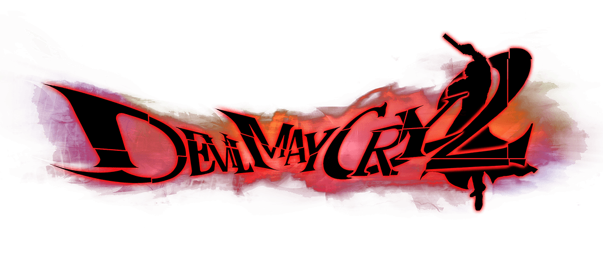

Dante is the recurring protagonist of
the Devil May Cry franchise, and the main
playable character for the majority
of the games in the series.
Devil May Cry is an action adventure
hack and slash video game series developed and released
by Capcom and created by Hideki Kamiya.
The series is about the main character Dante's goals
to avenge his mother's murder by exterminating demons.
Dante is the recurring protagonist of
the Devil May Cry franchise, and the main
playable character for the majority
of the games in the series.